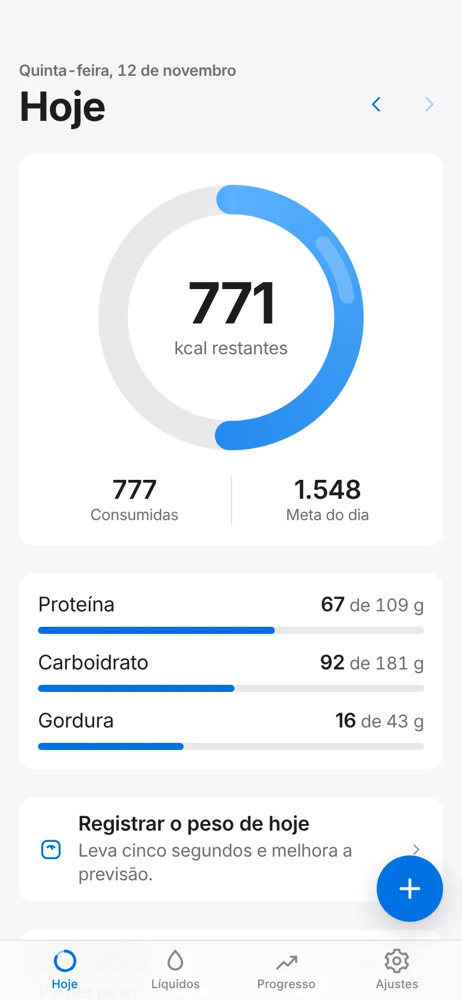
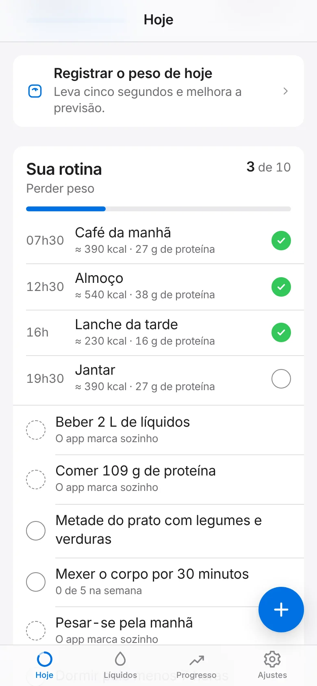
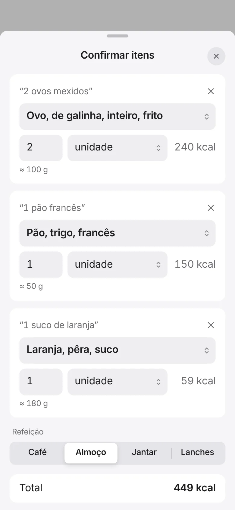
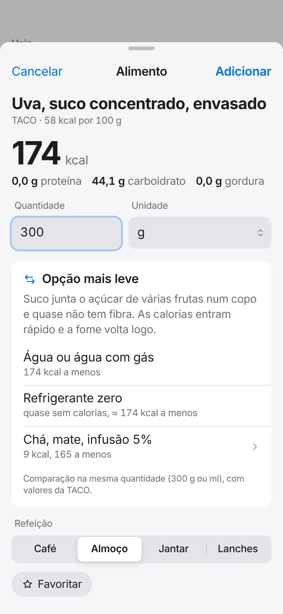
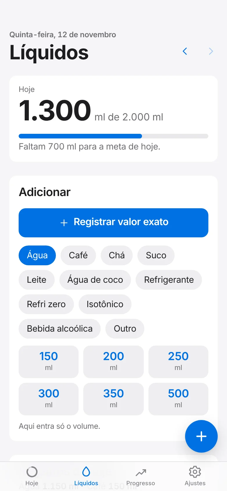
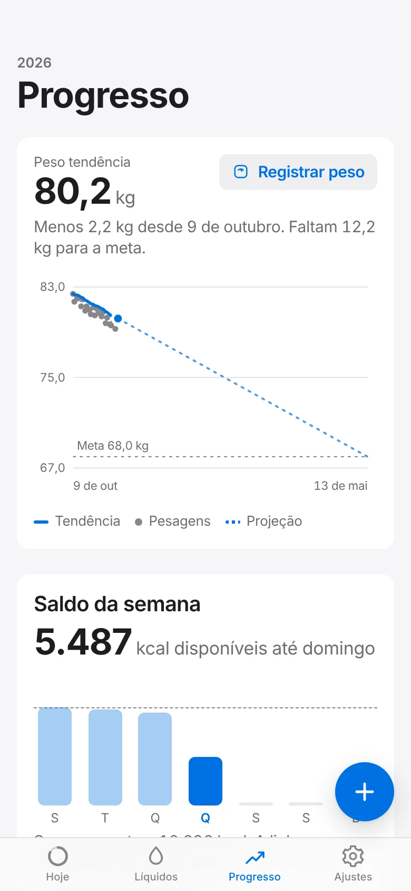

Com conta
O mesmo diário em todos os aparelhos
- Sincroniza mesmo depois de um tempo sem internet
- Entre com Face ID ou digital
- Cada conta só enxerga os próprios registros
Perder peso, ganhar massa, definir ou só comer melhor. O Leve calcula as calorias e a proteína, monta os horários e mostra quanto ainda cabe no dia.
Prefere sem cadastro? Usar só neste aparelho
Você já está conectado neste aparelho.

Você escreve como fala. O Leve faz as contas e mostra de onde vieram os números.
“2 ovos mexidos e 1 pão francês” vira itens com porções. Você confere antes de salvar.
Refeições a partir da hora em que você acorda, com calorias e proteína de cada uma.
Mais de 590 alimentos da tabela TACO, código de barras e 32 receitas típicas.
Água e outras bebidas em ml ou litros, com horário.
Sugestões com menos calorias e o motivo de cada uma. Sem culpa.
Peso tendência, data de chegada e o seu gasto medido depois de 14 dias.
Cada objetivo tem o seu cálculo e a sua rotina. Dá para mudar quando quiser.
Objetivo e proteína por dia
Passar da meta não deixa nada vermelho. O app explica o que acontece nos próximos dias.





Telas reais do app, com dados de exemplo.
Travas que nenhuma meta atravessa, em todo lugar onde uma meta é calculada.
O Leve não substitui médico ou nutricionista. As metas são estimativas (Mifflin-St Jeor e IMC da OMS).
Use com uma conta em todos os aparelhos, ou só neste aparelho, sem cadastro.
Com conta
Sem conta
Sem loja de aplicativos: abra o endereço e adicione à tela inicial.
Escolha o objetivo e o plano sai na hora.